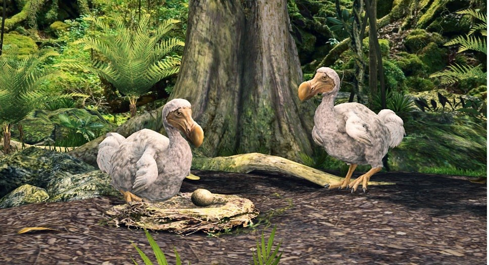
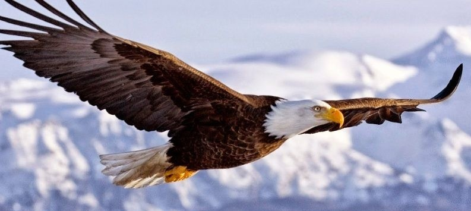

1.Origen del problema:
“La historia de la extinción no es reciente. Comenzó con la expansión humana y el desarrollo industrial, que alteraron drásticamente los hábitats naturales.
La deforestación, la urbanización y la agricultura intensiva,son solo algunas de las causas que han llevado a numerosas especies al borde de la extinción.”
2.Especies emblemáticas:
“El dodo, un ave incapaz de volar que habitaba en Mauricio, se extinguió en el siglo 17 debido a la caza excesiva y la introducción de especies invasoras.
Su desaparición es un recordatorio sombrío de la fragilidad de la vida en nuestro planeta.”
3.Esperanza y recuperación:
“El águila calva, una vez en peligro de extinción debido al uso de pesticidas como el DDT, ha visto un resurgimiento notable. Gracias a las leyes de protección
y la conciencia ambiental, su población ha aumentado, simbolizando la victoria de la conservación.”
4.Cronología de eventos:
“Desde la firma del Tratado de la CITES en 1973 hasta la creación del Día Mundial de la Vida Silvestre en 2013,la cronología de la conservación está llena de esfuerzos
globales para proteger a las especies amenazadas y sus hábitats.”
5.Impacto humano:
“Nuestras acciones tienen consecuencias directas en la vida silvestre. La contaminación de los océanos con plásticos y químicos ha provocado
la muerte de innumerables animales marinos, demostrando la necesidad urgente de cambiar nuestras prácticas cotidianas.”
6.Cultura y sociedad:
“Los animales en peligro de extinción han ocupado un lugar especial en muchas culturas, representando fuerza, sabiduría o espiritualidad. Protegerlos es también preservar
nuestro patrimonio cultural y mantener vivas las historias que nos definen como sociedad.”
|

|

|

|